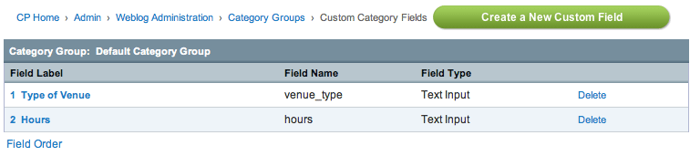

Category Field Management
Control Panel Location: Admin > Weblog Administration > Category Management

This section of the Control Panel is for the management of category custom fields. It is where category fields are created, deleted, and preferences are set.
The main Category Field Management screen shows a table of all the existing category fields for the currently chosen category group. It lists the category field name and provides links to edit the preferences.
- Create a New Custom Field: Enables you to Create a new Category Field.
- Edit Field: Click the Field Label to edit the category field.
- Delete: Delete the category field and associated data.